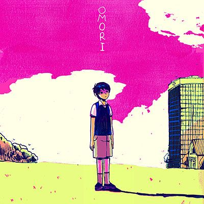

Explore a strange world full of colorful friends and foes. Navigate through the vibrant and the mundane in order to uncover a forgotten past.
When the time comes, the path you’ve chosen will determine your fate... and perhaps the fate of others as well.
OMORI is a video game by OMOCAT. It has been in production since 2014 and was released for Steam (PC/Mac) on December 25th, 2020.
OMOCAT is currently working on Asian localization and console release.
-

July 7, 2023
OMORI vinyl figures are available now!
OMORI vinyl figures are available now!
June 17, 2023
happy 1 year anniversary to OMORI console release!
December 31, 2022
OMORI has sold 1,000,000 copies! thank you!
December 25, 2022
happy 2nd anniversary to OMORI.
OMOCAT (Game Director) is an illustrator and the owner of OMOCAT, LLC. OMORI is a special project close to their heart. They have spent the past few years working tirelessly on OMORI with the rest of the team on every aspect of the game including writing, art, and programming. Now that OMORI is released, they are looking forward to directing new projects.
MINCED / CHARLENE LU (Illustrator, Animator, Leaf) is an artist who reflects and adapts to their surroundings. A lot of thought critters scramble around in their head, but they will always keep trying their best to convey what they want in earnest. It’s okay to take one step at a time and just enjoy life!
EMS / EMILY SHAW (Pixel Artist, Map Designer, Hamster Enthusiast) is an illustrator who spends upwards of 3 hours at buffets. Dear Protagonist is her personal brand dedicated to celebrating individuality with delicate sensibilities, all while going bananas about her favorite series. She loves bringing poetry and narratives to life, and hopes you enjoy the vibrant and mundane world of OMORI!
CLOVER & SEALIFE (Composer) is the project of Jami Lynne, a composer, vocalist, and electronic musician based in Seattle, Washington. With deep influence of and love for the sounds of vintage drum machines, shoegaze and city pop, CLOVER & SEALIFE sings a song of sentimentality and uncertain hope in the face of melancholy. She hopes her work on the OMORI soundtrack can express the feeling of finding small bits of joy in hopelessness, through the lens of early-CD-quality game music.

BLUEMOON / LUCA MASTROIANNI (Programmer) has been an indie game developer and programmer for 5 years and enjoys coding in every language. He studied the piano for ten years but can also play guitar, bass and drums. As an Italian, he loves pizza and eats it once a week, and he loves ginseng coffee. He really likes video games, and some of his other hobbies are watching anime, reading manga, and learning about history and economics. He also likes staying up all night with his friends, dancing, and drinking wine. He’s just an ordinary Italian dude.
OCEAN’S DREAM / CESAR RENDON (Programmer, Foodmonster) is a long time indie game developer, having worked on multiple projects before OMORI. He is a jack of all trades and works on a little bit of everything. He’s also obsessed with pizza.
SLEEPYKUYA / ANDREW VANCE (Battle Programmer) does programming for the battle system, which entails balancing enemy and player character stats, skills, items, and so on. He’s also incredibly good at fixing plot holes.

YIN / WHITNEY E. WHITE (Programmer) is a bit of an introvert, but loves making games and hanging out with like-minded people. She’s worked on several indie titles prior to OMORI, drawing inspiration from classic games of earlier eras, particularly JRPGs. When not making games she is a proud mother of six and a bit of a food connoisseur, her favorites being cheesecake and lasagna. She also occasionally streams game development and even gameplay during downtime. Creating games has always been a huge part of her life and she enjoys every moment of it.
CZO / CACHI CORDOVA (Programmer) is currently studying game development in college, and has been making and programming games for his friends since middle school. He’s used RPG Maker for 5 years and likes to experiment by creating complex mechanics within the existing engine. He likes games of all kinds, but especially loves horror games... and witches.
ANDREW BATINO (Writing Editor) helps with fixing typos and wonky sentences; he’s also worked with the clothing side of OMOCAT in the past. He loves playing rhythm and fighting games despite being mediocre at them, and often complains about balance in card games. He also collects plushies of a certain eastern series.
KIMBERLY VANCE (Game Tester) is an administrative assistant at OMOCAT who helps with OMORI, both as a game tester as well as an animation tracer. She is also a freelance illustrator who works on commissions during her spare time. She cannot go for more than two days without drinking boba.
ROCHELLE CONCEPCION (Game Tester) usually works on the clothing side of OMOCAT but has also become a game tester and animation tracer. She likes making miniatures and other odd objects, and especially likes sharks and coffee.
AIVI (Game Tester) has no real discernible talents besides driving people to the brink of madness. They mainly assist with editing dialogue, but also do some quality assurance from time to time. They also help with curating the OMORI social media accounts.

PRIDE-KUN (Game Tester) bides her time being a freelance artist and OC enthusiast, playing video games, and eating copious amounts of tacos. She helps with writing and testing and constantly draws fanart of the game.
KAIRU / KYLE OLIMAN (Game Tester) also does stuff for the game... but more on the testing side! When he’s not busy trying to break the game, he can be observed studying animation, cheering for idols, or wondering if he should roll the gacha one more time.
MOOGIRI / DANNY NGUYEN (Game Tester) is a Twitch streamer and constant daydreamer. Always looking for the next treat to fuel his imagination, he hopes everyone will enjoy the game as much as he did. He also really loves DINO DIG for some reason...
WAN (Web Developer, Dog) (Game Tester) likes cute things, singing, playing competitive games, and was recently bitten by the latest craze hitting the internet... peko.